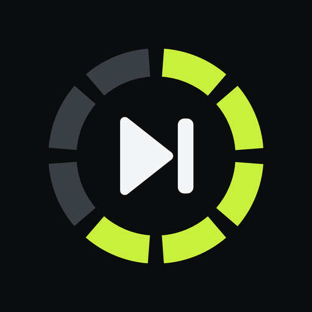

MyNextSetSchede di allenamento e timer Tabata EnglishAssistenza
Scrivici
Per domande, problemi o suggerimenti scrivi a jtengineeringsupport@gmail.com
Per aiutarci a risolvere il problema indica il modello del telefono, la versione di iOS o di Android, la versione di MyNextSet e i passaggi che hai fatto. Rispondiamo appena possibile.
Domande frequenti
Devo creare un account?
No. MyNextSet funziona senza registrazione e senza connessione a internet.
Dove sono salvati i miei dati?
Solo sul tuo iPhone, iPad o telefono Android. Non li riceviamo e non possiamo recuperarli al posto tuo. Se elimini l'app, il sistema cancella anche i suoi dati.
Come porto le schede su un nuovo telefono?
iPhone e iPad: se passi al nuovo dispositivo con il trasferimento di iOS o con un backup di iCloud o del computer, i dati di MyNextSet vengono trasferiti insieme al resto.
Android: MyNextSet non usa il backup su Google Drive. Prima di cambiare telefono esporta la libreria da Impostazioni → Importa ed esporta e ogni scheda dal suo menu con Esporta JSON, poi importa i file sul nuovo telefono dalla stessa schermata.
Gli allenamenti svolti si possono esportare in JSON per conservarli o analizzarli, ma non si reimportano.
Come importo una scheda da una foto o da un PDF?
- Apri Schede, tocca Importa con l'AI (o Nuova scheda → Importa con l'AI) e poi Copia prompt.
- Incolla il prompt nella chat AI che preferisci e allega la foto o il PDF della scheda.
- Copia la risposta, torna in MyNextSet, incollala e tocca Controlla JSON.
- Controlla l'anteprima e tocca Importa schede.
Come creo un circuito Tabata?
Apri Timer → Tabata, imposta i valori e tocca Aggiungi un altro Tabata per ogni blocco. Imposta il recupero tra i Tabata e le ripetizioni, poi avvia la sequenza o salvala con un nome.
Non sento i segnali acustici
In MyNextSet apri le impostazioni (l'icona a forma di ingranaggio) e controlla che Segnali acustici sia attivo, poi alza il volume. I segnali si sentono con l'app in primo piano: durante il timer lo schermo resta acceso apposta.
Come cambio la lingua?
MyNextSet è in italiano e in inglese e usa la lingua del telefono. Per scegliere una lingua solo per l'app: su iPhone e iPad apri Impostazioni → App → MyNextSet → Lingua; su Android 13 e successivi Impostazioni → App → MyNextSet → Lingua.
Dove trovo la guida?
In MyNextSet tocca l'icona a forma di ingranaggio e apri Tutorial e guida.
Quale versione ho installato?
Su iPhone: Impostazioni → Generali → Spazio iPhone → MyNextSet. Su Android: Impostazioni → App → MyNextSet. La trovi anche nella pagina dell'app sull'App Store o su Google Play.